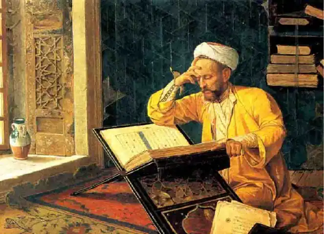
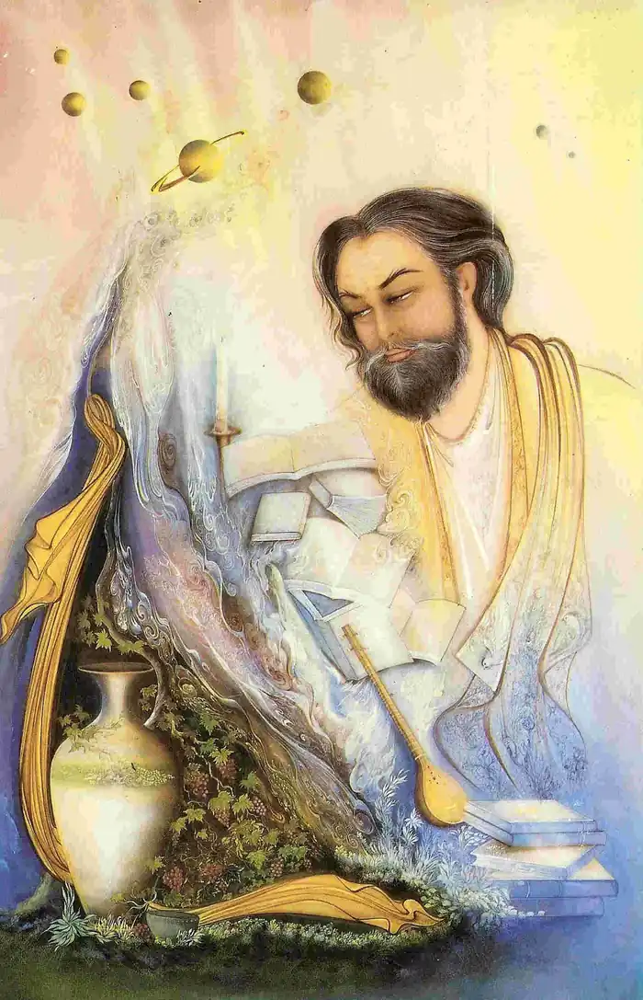
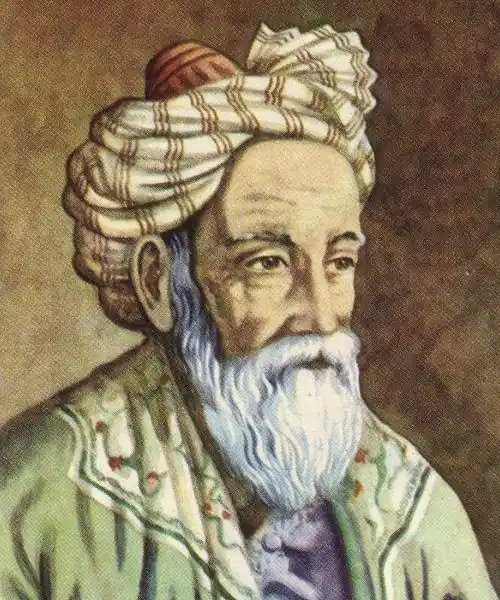

ОМАР ХАЙЯМ
(18 травня 1048 — 4 грудня 1131)
У 1859 році англійський поет Едвард Фіцджеральд опублікував книгу віршів "Рубайят Омара Хайяма". Вона містила близько ста чотиривіршів, перекладених з персидської. Перед читачем постав образ східного мудреця: любителя насолод у юності, розчарованого скептика в зрілому віці, релігійно налаштованого містика в старості. Цей переклад відкрив європейському читачеві персидського поета. Через півсторіччя стали з'являтися й інші твори Хайяма, які виявили нові риси вченого та поета. Це були фізичні, філософські, історичні, алгебричні трактати, астрономічні таблиці. Вірші Хайяма багато разів видавалися персидською мовою, були переклади європейськими мовами та мовами народів колишнього Радянського Союзу. Роки життя Хайяма різноманітні джерела вказують по-різному. Посилаючись на Велику Радянську енциклопедію, він народився близько 1040 року і помер у 1123 році. З іншого боку, його вважають ровесником візиря Нізама ал-Мулка (1017-1092), за гороскопом Хайяма, це —1106-1174 роки. Згідно з більшістю джерел, Хайям народився в місті Нішапурі, де й знаходиться його могила. Місто, де народився і помер видатний мислитель, існує й тепер. Це одне з міст провінції Хорасан, що на північному сході Ірану. У давнину Хорасан становив ядро парф'янської держави. Парфія належала до складу давньоперсидського царства. Хорасан був місцем своєрідної розмаїтості багатьох культур — парф'янської і персидської, грецької і римської, арабської і турецької. Наука країн ісламу ввібрала в себе традиції, що склалися ще в давнині на її територіях. Багато класичних праць вчених елінської епохи — Евкліда, Архімеда, Аполонія, Арістоте-ля та інших філософів, а також сирійська, персидська та індійська література (як вчені праці, так і народний епос) — були перекладені арабською мовою. У VIII столітті центром науки країн ісламу стає Багдад, де навчалося багато попередників Хайяма. Ім'я Хайяма в різних рукописах перекладалося по-різному. У найбільш повній формі це Гіяс ад-Дін Абу-л-Фатх Омар Ібн Ібрахім Хайям Нішапурі. Виходячи з повного імені Хайяма, ми бачимо, що його батька звали Ібрахім, і він, певно, походив з роду ремісників. Про молоді роки Хайяма майже нічого невідомо. Існує лише легенда про дитячі роки Хайяма й візира Нізама ал-Мулка, які, навчаючись разом, товаришували й дали клятву допомагати один одному, якщо хтось із них досягне високого стану. Сталося так, що Нізам ал-Мулк досяг ступеня візира, і Омар Хайям з'явився до нього й нагадав про клятву. Візир визнав старе право і хотів, щоб друг управляв Нішапуром і його околицями, але Омар віддав перевагу лише щорічній платі. Що ж вивчав Хайям за роки свого навчання? Перш за все у середньовічних мусульманських школах студіювали священну книгу мусульман Коран. Роки навчання змінилися роками вчителювання, бідування і мандрів. Мандрівки Хайяма проходили в різних містах — у Нішапурі, Самарканді, Бухарі. Він був не тільки видатним математиком, але й видатним енциклопедистом свого часу. У філософії він визнавав себе послідовником Ібн Сіни. У двадцятип'ятирічному віці він написав алгебричний трактат, який уславив його. Мислителя запросили до Ісфахана в 1074 році — колишню столицю сельджукидського султана Ма-лік-шаха — керівником обсерваторії. Там він склав у 1079 році на основі довготривалих астрономічних обчислювань сонячний календар, який і тепер серед усіх існуючих є найбільш точним. Там же він написав другу знамениту математичну працю "Коментарі до труднощів у вступах книг Евкліда" — звід майже всієї давньогрецької елементарної геометрії і теорії чисел, і деякі філософські твори, зокрема "Трактат про буття і повинність", що був написаний майже езоповою мовою у формі відповіді на те, що він не визнає буття Бога й необхідності виконувати релігійні обряди. Коли в 1092 році загинули покровителі вченого Малік-шах і його візир і була закрита Ісфаханська обсерваторія, Хайям намагався зацікавити спадкоємців шаха астрономічними заняттями, але безуспішно. Через декілька років столиця Сельджукідів була перенесена у Мерв. Хайям переїхав туди і продовжував свою наукову роботу. Оточений недоброзичливцями з числа реакційного духовенства, він уникав публічних виступів, але десять його трактатів дійшли до нас. Із свідчень сучасників і близьких продовжувачів точно відомо, що Хайям складав чотиривірші (рубаї). Чотиривірші виконувалися в усній формі, можливо, виспівувались. Факт існування "хайямівських рубаїв" є незаперечним. Які з них належать саме йому? Перш за все ті, що близькі йому духовно, і ті, що про них ми дізнаємося з рядків авторів, які знали його особисто. Ми маємо понад тисячу чотиривіршів, які приписують Хайяму. Багато віршів збереглось у різних варіантах, і це показує, що спочатку їх не записували — їх передавали з уст в уста. У деяких чотиривіршах Хайям гірко ремствує на життєві негаразди або скаржиться на "вчену чернь". Життєві негаразди привчили мислителя, на перших порах, очевидно, доволі нестриманого на язик, до замкненості й обережності. Особливо поет застерігає від неуків і дурнів. Чимало рубаїв Хайяма присвячено філософським питанням. В одних з них провідною є його думка про те, що "неодмінно суще є одиниця", в інших — чітко проглядає доматеріалістичне сприйняття світу. Неодноразово мотивом чотиривіршів стає ідея про вічний кругообіг матерії у поєднанні з сумним відчуттям тлінності всього живого. Ціла серія роздумів на цю тему втілена у форму віршів про гончарні вироби. Аналогічні думки про кругообіг матерії у природі є у віршах, де Хайям наголошує, що коли ми помремо, то наш прах стане цеглою, з якої хтось побудує собі хороми. Дуже знаменно, що подібні мотиви ми знаходимо у великого Шекспіра, який вклав в уста Гамлета промови, дуже близькі за змістом до слів Хайяма про кругообіг матерії у природі й рівності в ньому царів і пастухів. У багатьох чотиривіршах з великою силою звучить інший лейтмотив — коливань і сумнівів у філософських ученнях. Хайям-поет начебто іронізує з Хайяма-філософа. "Напівбезбожні" думки, а особливо скарги на неустрій світу й життя людини зустрічаються в досить великій частині чотиривіршів. Даючи оцінку земному життю, яке пов'язане з низкою дерзань, поет наголошує, що людина не може навіть сподіватися на винагороду в загробному бутті. У деяких віршах Хайям закликає відмовитися від цих надій і страхів, а разом з тим, і від усіх релігійних обрядів. Не вірячи в загробне життя, мудрець знає, що після смерті він не буде підлягати тим пекельним покаранням, що він їх, згідно з ученням ісламу, має отримати. Тому поет не боїться смерті й навіть байдужий до неї. І ніби заключний акорд усієї цієї антирелігійної прелюдії звучать вірші, в яких висловлюються відверті сумніви коли не в існуванні Бога, то в його мудрості і благості. Творець світу виступає як невдалий будівник, відповідальний за всі вади свого творіння. Традиційне пояснення зла у світі як покарання, що його Бог посилає грішникам, висміюється. Також висміюється і вчення ісламу про "милосердя" Бога. А в деяких віршах лунає навіть пряме богохульство. До цих чотиривіршів тісно примикає цикл віршів, у яких поет глузує з офіційної релігії, її звичаїв, її служителів. Він викриває лицемірство та скупість духовенства. За одним заходом дістається і безплідним ученням усіх сімдесят двох сект ісламу. Релігійній моралі Хайям протиставляє проповідь насолод земним життям, таким чудовим, попри всі його негаразди. Це суперечить вченню ісламу щодо насолод у цьому житті, бо він визнає їх тільки в загробному світі й тільки для тих, хто був праведником, бо ж грішникам уготовані муки пекла. Однією з найвищих насолод Хайям вважає вино. Оспівуючи вино, Хайям був далекий від проповідування сп'яніння і розбещеності. Але вино заборонялось ісламом і похвала вину була особливою формою протесту проти церковних догм, особливою формою вільнодумства. Це підкреслює і Хайям. Багато натхненних віршів присвячує поет любові. Це ліричні чотиривірші і про радощі кохання, і про її муки. У багатьох рубаях він оспівує жіночу красу, у деяких захоплюється красою юнака. Велика кількість гуманістичних чотиривіршів сповнена гордості за людину. Хайям рішуче протестує проти несправедливого устрою людського життя. Сам він не хоче бути ні рабом, ні владикою. Нарешті, мислитель мріє про краще майбутнє для людства, про справедливий громадянський устрій, у якому могли б безперешкодно розвиватися шляхетні прагнення кожної особистості й щастя випало б на долю всіх. Ми бачимо, що в поезії Хайяма була відображена складна гама почуттів. Але цілком виразно у віршах Хайяма виступають такі основні риси його світогляду, як гуманізм і волелюбність, постійна іронія і скепсис, а поряд з цим своєрідне епікурейство, що іноді переходить у гедонізм і поєднується з вільнодумством, а то й безбожжям. У роки опали Хайям, коли його відносини з духовенством різко погіршились, був змушений здійснити хадж — паломництво до Мекки, де він розкаявся. Про те, як помер великий мудрець, ми дізнаємося зі слів його свояка, котрий бачив, як Хайям, читаючи метафізику, раптом покликав чистих, щоб скласти заповіт, потім помолився і вже не їв і не пив, а після вечірньої молитви уклонився Господові, а потім помер. Могила Хайяма знаходиться у Нішапурі коло мечеті на пам'ять і мама Мах рука. На цій могилі у 1934 році на кошти, зібрані шанувальниками з різних країн творчості Хайяма, було споруджено обеліск. ОСНОВНІ ТВОРИ: "Рубайят", "Коментарі до труднощів у вступах книг Евкліда", "Трактат про буття і повинність". ЛІТЕРАТУРА: 1. Морочник С. Б. и Розенфельд Б. А. Омар Хайям — поэт, мислитель, учений.— Душанбе, 1957; 2. Алиев P. M., Османов М. Н. Омар Хайям. М., 1959.